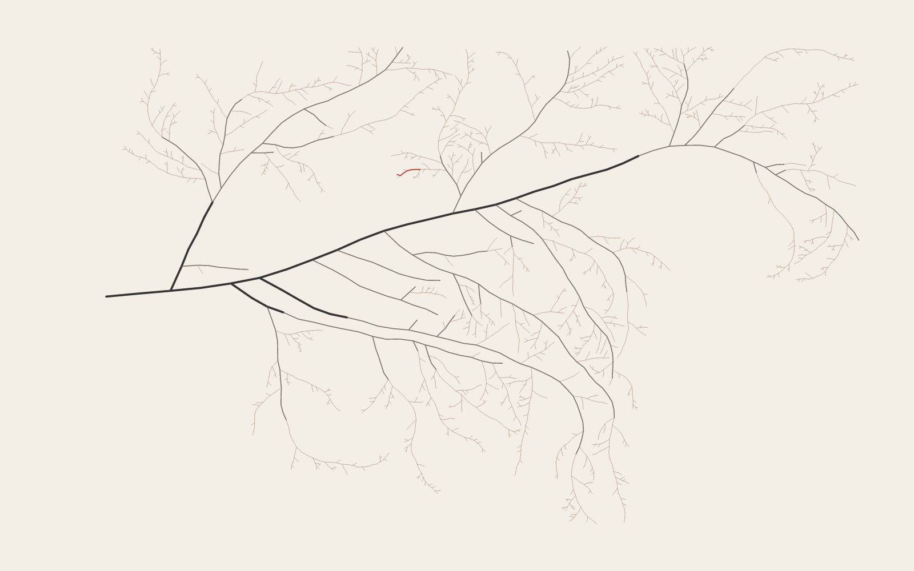
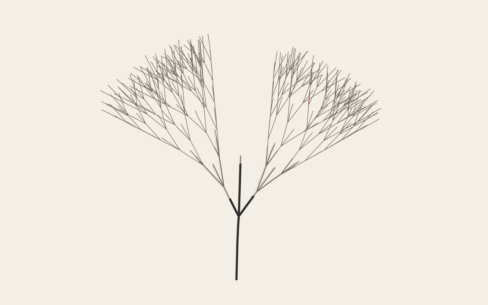
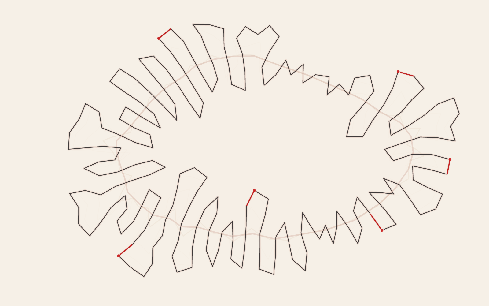
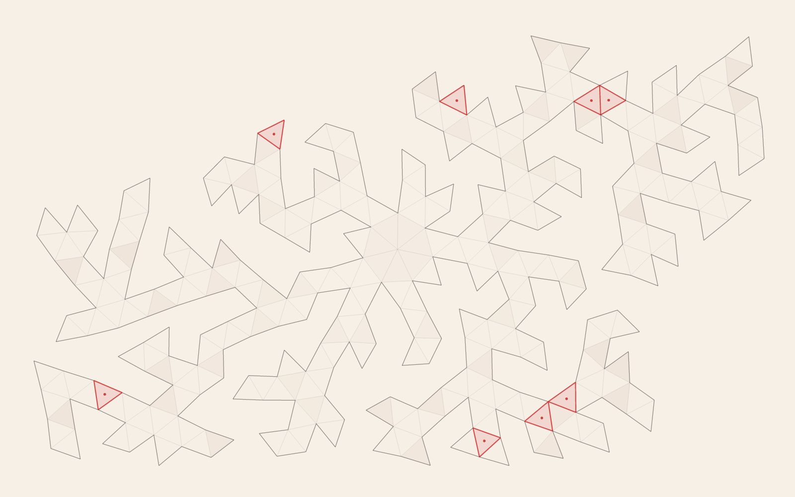
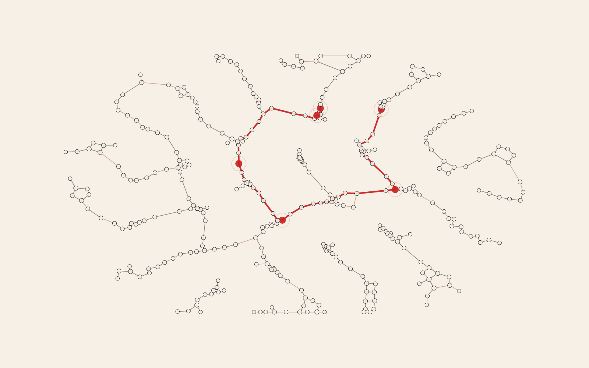
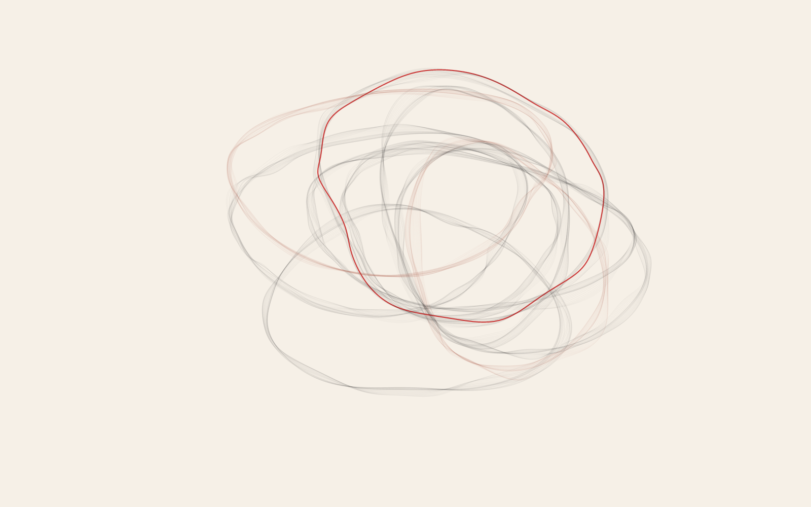

01
Hyphae growth study
Non-overlapping connected circles with shrinking radii, wobble, and perpendicular side branches.
The strongest directions from the reconstruction study, revised around structural growth, force, collision, and accumulation. Rejected directions have been removed from this review.

Non-overlapping connected circles with shrinking radii, wobble, and perpendicular side branches.

A tip-only branch queue whose widths shrink while angular wobble grows with age.

Curvature-weighted edge splitting with linked attraction and non-linked repulsion.

Outward triangle growth with free-space tests, mesh relaxation, and long-edge splitting.

Offset node spawning with mutual-nearest links and coupled spring/rejection forces.

Sand Spline study: equal-sampled closed splines accumulate outward-weighted radial drift into a layered trace.